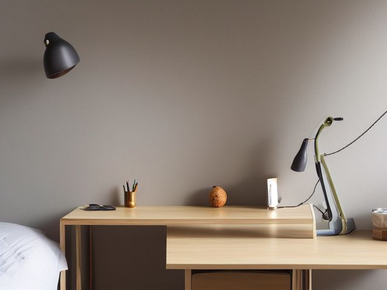

Kids Bedroom micro zone
The Study Desk
One clear surface where homework actually gets started rather than avoided.
One session: 45-75 min. most of it in Sort, and nearly all of that is paper

What done looks like
Desk surface bare except a lamp, a pen cup and one tray holding live work. Laptop charger threaded through a clip on the desk edge so the plug never drops behind the desk. Books on the shelf above, none stacked on the surface. Chair empty.
Check these before you start
- Water and electricityChained extension strips under the desk feeding a laptop charger, a lamp and a games console. One strip, one wall socket, and keep the water bottle off the same end of the desk as the plugs.
- Fall, cut, or crushCraft knives and open scissors loose in a desk drawer, or standing point up in the pen cup where a hand goes in blind.
What to have on hand before you start
These are types of thing, not brands. If you already own something that does the job, that is the right one to use. Each says which pass needs it and what to watch out for.
- Color-coded microfiber cloth set ×12
Wipe, dust, and dry surfaces, in the Shine pass.
Wash by use color; avoid fabric softener. - Neutral pH multi-surface cleaner
Routine cleaning of sealed surfaces, in the Shine and Sustain passes.
Verify surface compatibility; lock around children and pets. - Compact vacuum with attachments
Remove dust, crumbs, and debris, in the Shine pass.
Use appropriate attachment. - Keep, Relocate, Donate, Recycle, Trash container set ×5
Support rapid item routing during Sort, in the Sort pass.
Do not block exits. - Portable cleaning caddy
Transport and contain cleaning inputs, in the Straighten, Shine and Sustain passes.
Secure chemicals from children and pets. - Portable label maker
Create durable standardized labels, in the Standardize and Sustain passes.
Follow surface and adhesive guidance. - Removable write-on labels
Create temporary or adjustable visual controls, in the Standardize pass.
Test on delicate finishes.
Only if your study desk has one: 7 more
Not every study desk needs these. Each one is here because some do, and the reason is next to it.
- Cord Label Set
Identify chargers and device cables, in the Standardize and Sustain passes.
Install and use according to product instructions. - Folding Laundry Basket ×3
Move clean laundry back to rooms, in the Straighten, Standardize and Sustain passes.
Do not overload; anchor wall-mounted or tall systems where required. - Laundry Hamper Sorter
Separate laundry by household method, in the Straighten, Standardize and Sustain passes.
Do not overload; anchor wall-mounted or tall systems where required. - Drawer Divider Set
Create visible subcategories in shallow drawers, in the Straighten, Standardize and Sustain passes.
Do not overload; anchor wall-mounted or tall systems where required. - Toy Bin with Picture Label ×4
Support independent child cleanup, in the Straighten, Standardize and Sustain passes.
Do not overload; anchor wall-mounted or tall systems where required. - Front-Facing Book Bin ×2
Display children's books for easy access, in the Straighten, Standardize and Sustain passes.
Do not overload; anchor wall-mounted or tall systems where required. - Surge Protector with Overload Protection
Control device charging and electronics, in the Straighten and Safety passes.
Install and use according to product instructions.
The six passes, in order
Work them in this order. Sorting after you have arranged things means arranging things you were about to remove.
Sort
Decide what stays. Everything else leaves the zone now.
Paper first, and every sheet goes to exactly one of three places: live work into the tray, keepsake into the memory box, everything else into recycling. A worksheet from a finished term is recycling even when the marking was good.
Straighten
Give what stays a home, placed where the hand actually reaches.
Pens and pencils standing in a cup within a hand's reach of the writing hand, not across the desk where a reach knocks the water bottle over. Books and folders go up onto the shelf so the surface stays a work surface.
Shine
Clean it, and use the cleaning to inspect what you cannot see when it is full.
Clear the whole desk down to bare wood, wipe it, then get the pencil sharpener dust and dried glue out of the drawer runners. Wipe the lamp shade too, because a dusty lamp is a dimmer lamp.
Surface by surface, all 8 of them, with what to use on each.
Safety
Make the zone safe for everybody who uses it, including the shortest person.
Count the plugs under the desk. A lamp, a laptop charger and a strip plugged into another strip is where an overloaded socket hides, so bring it back to one strip in one wall socket. Scissors and craft knives point down in the cup, and blades go in a closed drawer if a younger child comes in here.
Standardize
Write down the best way you know today, so it survives you forgetting.
The tray is the standard: if it does not fit in the tray, it is not live work, and it goes to the shelf, the memory box or the recycling. Turn the tray out on the same evening the backpack gets emptied, so it never quietly becomes a second pile.
Sustain
Attach the reset to something that already happens, so it keeps itself.
The desk gets cleared when the laptop lid closes at the end of homework, not the next morning. Closing the lid is the trigger.
The finished schoolwork
This is the pile you keep moving instead of deciding on: exercise books, paintings, a folder of worksheets, and the flat certainty that binning any of it means you did not care. Take the judgement out of the moment and put it into a container. One memory box per child per school year, an actual box with a lid and a fixed size, kept on the wardrobe top. When it is full it is full, and the way you make room is by taking something out, not by getting a second box. Photograph the oversized art and let the paper go. Keep the pieces where you can genuinely see their hand getting better, because those are the ones worth opening in ten years. The size of the box makes the call so you do not have to make it at nine o'clock on a Tuesday.
Cleaning it properly, surface by surface
Shine the desk from the shelf above down to the cables below, and take the top right back to bare wood. The drawer runners and the cable nest under the desk are where the real grime hides, not the surface everyone sees.
Work down, not across. Whatever comes off a high surface lands on the one below it, so cleaning the floor first means cleaning it twice.
Carry these in with you. Neutral pH multi-surface cleaner; Food-area degreaser; Compact vacuum with attachments; Color-coded microfiber cloth set; Portable cleaning caddy; Small detail brush set.
- The shelf above and the top edges of the books
Dust the shelf board and run the cloth along the top edges of the standing books, working left to right so dust falls onto the desk you have not cleaned yet, not onto a finished surface. - The lamp shade and neck
Dry microfiber cloth over the shade and down the neck. A dusty shade throws less light, so this earns its place. Wipe the switch and the base where fingers turn it on. - The laptop or tablet screen
Switch it off and wipe the screen with a dry microfiber cloth only, in slow straight passes. Keep every spray and damp cloth away from it, since water and a screen do not mix. If a smear will not lift, breathe on the glass and wipe again rather than wetting it. - The desk surface, down to bare wood
Clear everything off. Wipe the whole top with the neutral pH cleaner, then lift dried glue, sticker gum and marker with a dab of the degreaser on a corner of the cloth, and buff dry. - The pen cup and the live-work tray
Tip the pen cup out over the bin, wipe it inside and out, and stand the pens back point down. Lift the tray, wipe under it and the ring it left, and set it back. - The drawer interior and the runners
Open the drawer fully and vacuum out the pencil-sharpener shavings and dried glue that gather in the corners. Wipe the base, then run the cloth along both runners so the drawer glides and closes flush. - The chair, seat, back and casters
Wipe the seat and back with the neutral pH cleaner. Tip the chair and pick hair and grit out of the casters with the detail brush so they roll clean. - The cables and power strip under the desk, and the floor
Vacuum the dust off the power strip and the cable bundle with the brush tool, wipe the cables down as you handle them, then vacuum the floor under the desk where crumbs collect out of sight.
Inspect as you clean. Cleaning is the only time you see the zone empty, so use it.
- A frayed, kinked or nicked laptop charger flex, or a plug and strip that feel warm or look scorched, noticed as you dust and handle the cables.
- A chair caster that wobbles or a seat joint that flexes and creaks when you tip the chair to clean it.
- A drawer runner cracked or bent so the drawer will not close flush even after the grit is out.
- A hairline crack or a lifted patch of veneer on the desktop, uncovered once the surface is bare and wiped.
The standard that keeps it fixed
The surface holds the current task, the lamp, the pen cup and one tray, and the tray only holds work that is still live.
Reset trigger. Desk cleared to the photo the moment the laptop lid closes at the end of homework.
The rest of the kids bedroom, in working order
Each of these is one session on its own. Finish this zone before you open the next.
- The Bed and Sleep Zone
- The Toy Storage Zone
- The Study Desk, you are here
- The Clothing Closet
- The Dresser Drawers
- The School and Activity Launch Zone
The Kids Bedroom in full, with what each of the 6 zones is for
Related reading
- What is 6S?
- This zone's safety pass, in full
- Is one spot in this zone always the one you skip?
- Why this zone gets messy again
- Decluttering vs. organizing
- Before you buy storage for this zone
- Still does not fit, even after the honest count?
- Does something in this zone actually get used somewhere else?
- Stuck on one item in this zone?
- Written the standard, but nobody else follows it?
- Does everyone in the house agree what "done" looks like here?
- Does more than one person use this zone?
- Found a duplicate of something in this zone?
- Why the standard above names one home per category
- Is the everyday item in this zone actually the easy one to reach?
- Not sure whether to keep something in this zone?
- Does this zone keep running out of something?
- Started this zone and stalled partway through?
- Have you stopped noticing the clutter in this zone?
When you want it off the screen
Carry The Study Desk into the room
The method above is complete and free. The Whole House Print Pack puts The Study Desk and the other 113 micro zones on 684 printable cards, so the steps you just read are not stuck behind a phone screen while your hands are full.
The Print Pack, 19 dollarsJust this zone, 4 dollarsOr draw a card free
The Study Desk on its own is 4 dollars for 6 cards. All 114 micro zones is 19 dollars for 684. The whole house is the better buy; the single zone is here so you can take only what you are working on.
If The Study Desk keeps fighting back, the real problem usually sits somewhere else in the room. A one hour virtual consult is 250 dollars: we find the function, the friction and the root cause together, and you keep a written standard for the space. See what a consult covers.